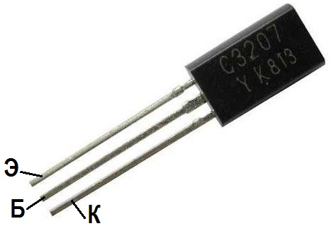

Транзистор C3207 (2SC3207)
Транзистор 2SC3207 — высокочастотный типа n-p-n, биполярный, кремниевый, средней мощности.
Тип корпуса TO-92.

Рис. 1 - Внешний вид и цоколевка транзистора C3207
| Параметр | Значение |
|---|---|
| Максимальное напряжение коллектор-база, Uкбо макс (при заданном обратном токе коллектора и разомкнутой цепи эмиттера) |
300 В |
| Макс. напр. коллектор-эмиттер, Uкэо макс (при заданном токе колллектора и разомкнутой цепи базы) |
200 В |
| Ток коллектора Iк макс, не более | 0,1 А |
| Рассеиваемая мощность коллектора, не более | 0,9 Вт |
| Коэффициент усиления транзистора по току (h21э) минимальное | 90 |
| Граничная частота коэффициента передачи тока | 70 МГц |
Аналоги
- SK9352,
- BF299,
- 2N6516,
- KT504A.
Источники:
chipdip.ru - SC3207, Транзистор NPN 200В 100мА 900мВт [TO-92MOD]